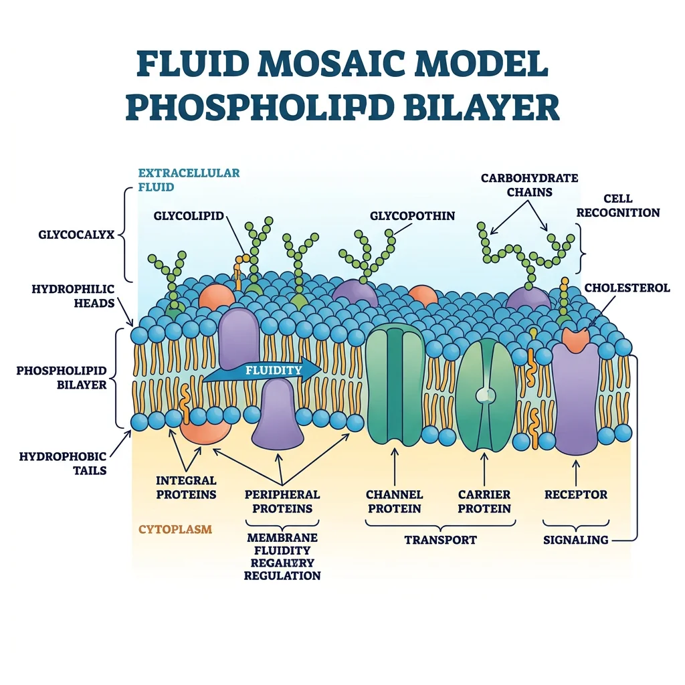
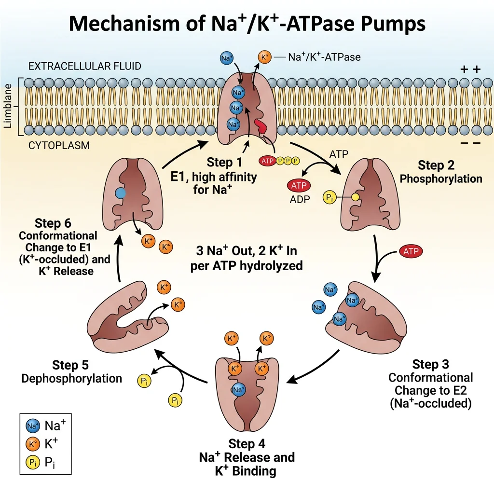
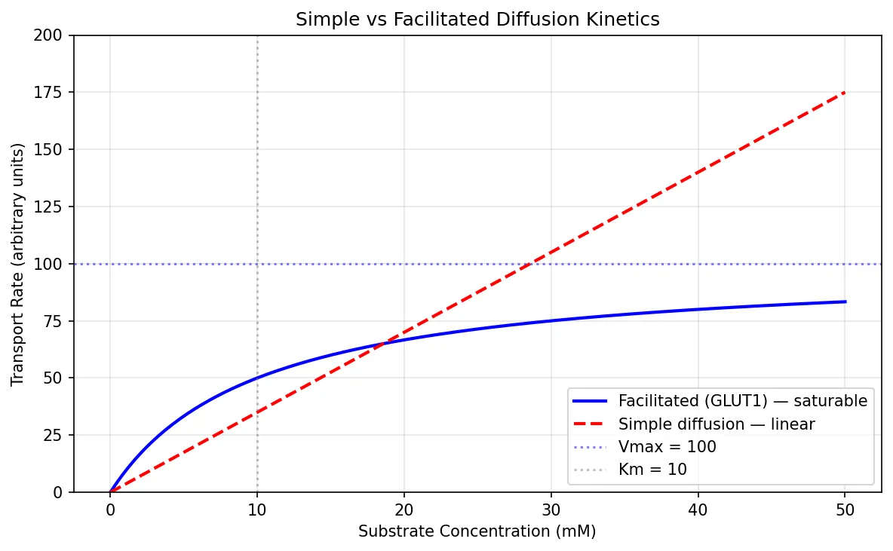
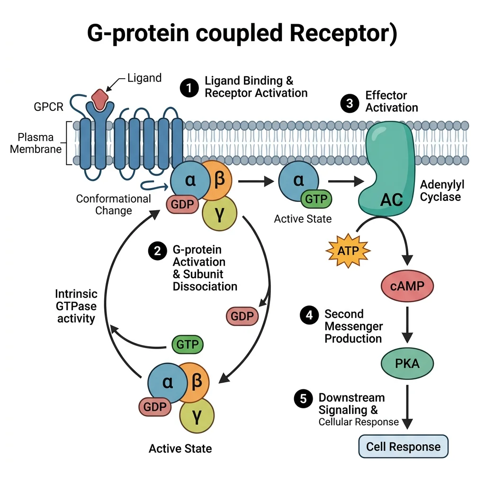
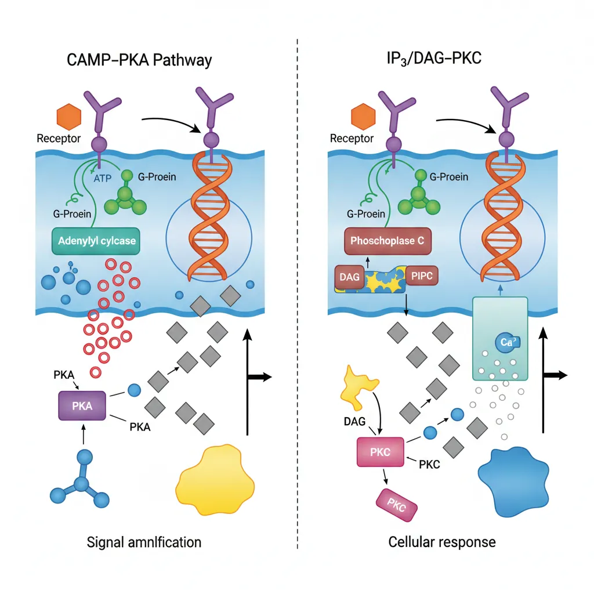
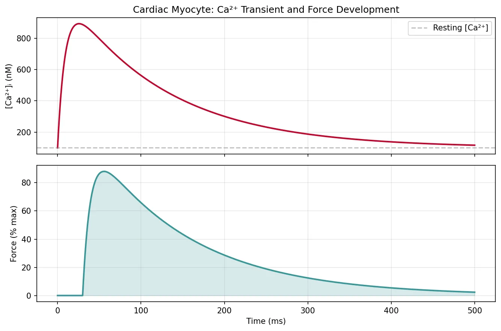
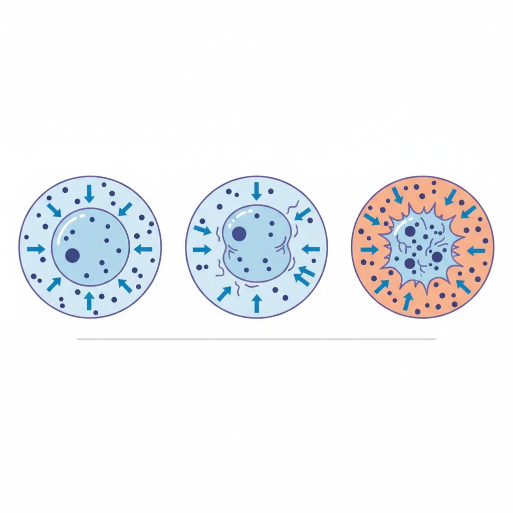
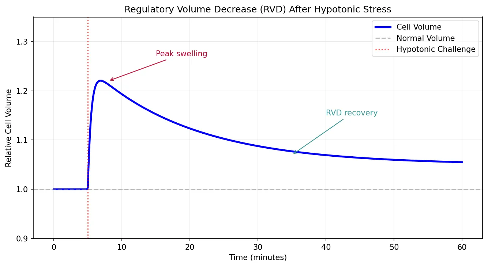

Physiology Mastery
Homeostasis & Feedback
Set points, feedback loops, allostasisNeurophysiology & Action Potentials
Neurons, action potentials, synapsesCardiac Electrophysiology & Hemodynamics
Heart rhythm, hemodynamics, cardiac outputRespiratory Mechanics & Gas Exchange
Breathing mechanics, gas exchange, V/QRenal Physiology & Fluid Balance
Nephron function, filtration, acid-baseGI Physiology & Absorption
Motility, secretion, nutrient absorptionEndocrine Regulation & Metabolism
Hormones, thyroid, adrenal, metabolismExercise Physiology & Adaptation
Acute responses, training adaptationsCellular & Membrane Physiology
Ion transport, signaling, second messengersBlood & Immune Physiology
Hematopoiesis, coagulation, immunityReproductive & Developmental
Reproduction, pregnancy, fetal physiologyIntegrative & Clinical Physiology
Stress, shock, sepsis, agingMembrane Structure & Function
Every living cell is defined by its plasma membrane — a dynamic, selectively permeable barrier only 7–8 nm thick that separates the precisely controlled intracellular environment from the chaos of the extracellular world. The membrane is not a passive wall; it is a bustling molecular landscape of lipids, proteins, and carbohydrates that mediates transport, signaling, adhesion, and identity.

Historical Milestones
Understanding membrane structure evolved over a century. In 1895, Charles Overton observed that lipid-soluble substances cross membranes faster, suggesting a lipid composition. Gorter and Grendel (1925) extracted lipids from red blood cells and calculated they formed a bilayer. Danielli and Davson (1935) proposed the "protein sandwich" model. The modern fluid mosaic model by Singer and Nicolson (1972) — with proteins floating in a sea of lipids — revolutionised cell biology and remains the foundational framework, with refinements like lipid rafts added in the decades since.
Lipid Bilayer Organization
The membrane's core is a phospholipid bilayer — two leaflets of amphipathic lipid molecules arranged with hydrophilic heads facing the aqueous environment and hydrophobic tails facing inward, creating an oily interior that repels water-soluble molecules.
Major Lipid Components
| Lipid Class | Structure | Function | Clinical Relevance |
|---|---|---|---|
| Phospholipids | Glycerol backbone + 2 fatty acid tails + phosphate head group | Primary structural component; forms the bilayer | Phosphatidylserine exposure on outer leaflet → "eat me" signal for apoptosis |
| Cholesterol | 4-ring steroid nucleus, inserts between phospholipids | Modulates fluidity — stiffens at high temperature, prevents solidification at low temperature | Statins lower cholesterol synthesis; cholesterol-rich lipid rafts concentrate signaling proteins |
| Sphingolipids | Sphingosine backbone + fatty acid + head group | Signaling (ceramide, sphingosine-1-phosphate); myelin sheath structure | Sphingolipidoses (Tay-Sachs, Gaucher, Niemann-Pick) — lysosomal storage diseases |
| Glycolipids | Lipid + carbohydrate (outer leaflet only) | Cell recognition, immune identity (ABO blood groups) | Ganglioside GM1 is the receptor for cholera toxin |
Membrane Proteins & Channels
Proteins constitute 25–75% of membrane mass (varying by cell type) and perform virtually all dynamic membrane functions. They are classified by their relationship to the bilayer:
- Integral (transmembrane) proteins: Span the entire bilayer with one or more α-helical or β-barrel domains. Cannot be removed without disrupting the membrane (require detergents). Examples: ion channels (Na⁺, K⁺, Ca²⁺, Cl⁻), GPCRs, receptor tyrosine kinases, aquaporins, glucose transporters (GLUTs)
- Peripheral proteins: Attached to the membrane surface by electrostatic or hydrogen bonds; removable by changes in pH or ionic strength. Examples: spectrin (cytoskeletal support in RBCs), ankyrin, G-protein subunits, protein kinase C (when activated)
- Lipid-anchored proteins: Covalently attached to lipid molecules embedded in the bilayer. Examples: GPI-anchored proteins (outer leaflet — e.g., alkaline phosphatase, acetylcholinesterase), Ras proteins (inner leaflet, farnesylated)
Ion Channels — The Selective Gates
Ion channels are pore-forming transmembrane proteins that allow passive (down-gradient) flow of specific ions at rates up to 10⁸ ions/second — far faster than any transporter. They are characterised by:
- Ion selectivity: The selectivity filter (narrowest part of the pore) discriminates between ions based on size and charge. The K⁺ channel filter (identified by Roderick MacKinnon, Nobel 2003) mimics the hydration shell of K⁺, allowing it through while excluding the smaller Na⁺
- Gating mechanism: Voltage-gated (respond to membrane potential — Na⁺, K⁺, Ca²⁺ channels), ligand-gated (respond to chemical binding — nAChR, GABA_A, NMDA), mechanically-gated (respond to stretch — Piezo1/2 channels)
- States: Closed (resting), open (conducting), inactivated (refractory — cannot be opened despite appropriate stimulus)
The Patch Clamp Revolution — Neher & Sakmann
In the late 1970s, Erwin Neher and Bert Sakmann developed the patch clamp technique — pressing a glass micropipette (tip diameter ~1 µm) against a cell membrane to form a gigaohm seal, enabling measurement of current through single ion channels. For the first time, scientists could hear individual channels flipping open and shut in real time.
The technique revealed that ion channels don't gradually open — they exhibit all-or-none gating, switching between conductance states in microseconds. Four configurations are possible: cell-attached, whole-cell, inside-out, and outside-out — each providing different experimental access. This single technique launched the era of modern electrophysiology and earned the 1991 Nobel Prize in Physiology or Medicine.
Membrane Fluidity & Asymmetry
The membrane is a two-dimensional fluid — lipids and many proteins undergo rapid lateral diffusion within each leaflet (diffusion coefficient ~10⁻⁸ cm²/s), but transverse movement ("flip-flop") between leaflets is extremely rare without enzymatic help.
Factors Affecting Fluidity
- Fatty acid saturation: Unsaturated tails (cis double bonds) create kinks → prevent tight packing → increase fluidity. Saturated tails pack tightly → decrease fluidity
- Chain length: Shorter chains → less van der Waals interactions → more fluid
- Cholesterol: At 37°C, stiffens the membrane (restricts phospholipid movement); at low temperature, prevents crystallisation — acts as a "fluidity buffer"
- Temperature: ↑ Temperature → ↑ fluidity (thermal motion increases)
Leaflet Asymmetry
The two leaflets have different lipid compositions, maintained by flippases (move phospholipids inward, ATP-dependent), floppases (move outward, ATP-dependent), and scramblases (bidirectional, Ca²⁺-activated, energy-independent):
- Outer leaflet: Enriched in phosphatidylcholine and sphingomyelin; glycolipids exclusively here
- Inner leaflet: Enriched in phosphatidylserine (PS) and phosphatidylethanolamine (PE); phosphoinositides (PI, PIP₂) — precursors for IP₃/DAG signaling
Ion Transporters & Pumps
While channels allow passive ion flow, transporters and pumps move molecules against their electrochemical gradients, spending cellular energy to maintain the disequilibrium that is the hallmark of life. Without these molecular machines, all gradients would dissipate and the cell would reach thermodynamic equilibrium — death.

Na⁺/K⁺-ATPase
The Na⁺/K⁺-ATPase (sodium-potassium pump) is the single most important transport protein in animal cells, consuming approximately 25-40% of all cellular ATP (up to 70% in neurons). Discovered by Jens Christian Skou (Nobel Prize, 1997), this P-type ATPase performs the following cycle for each ATP hydrolysed:
- Binds 3 Na⁺ ions from the intracellular side (high affinity for Na⁺ in E1 conformation)
- ATP phosphorylates the pump → conformational change to E2
- 3 Na⁺ released extracellularly (low Na⁺ affinity in E2)
- 2 K⁺ bind from the extracellular side (high K⁺ affinity in E2)
- Dephosphorylation → conformational change back to E1
- 2 K⁺ released intracellularly → cycle repeats
Pharmacological Targets
Cardiac glycosides (digoxin, ouabain) inhibit the Na⁺/K⁺-ATPase by binding to the extracellular K⁺ site. In cardiac myocytes: ↓ pump activity → ↑ intracellular Na⁺ → reduces the gradient driving the Na⁺/Ca²⁺ exchanger → ↑ intracellular Ca²⁺ → stronger contraction (positive inotropy). This is why digoxin is used in heart failure and atrial fibrillation — but the therapeutic window is narrow, and toxicity causes dangerous arrhythmias.
Ca²⁺ Pumps & Exchangers
Intracellular Ca²⁺ concentration is maintained at an extraordinarily low level (~100 nM) compared to extracellular (~1.2 mM) — a 10,000-fold gradient that makes Ca²⁺ a powerful signaling molecule. Three systems maintain this gradient:
| System | Location | Mechanism | Characteristics |
|---|---|---|---|
| PMCA (Plasma Membrane Ca²⁺-ATPase) | Plasma membrane | Primary active transport (1 Ca²⁺ out per ATP) | High affinity, low capacity — fine-tunes resting Ca²⁺; activated by calmodulin |
| NCX (Na⁺/Ca²⁺ Exchanger) | Plasma membrane | Secondary active (3 Na⁺ in : 1 Ca²⁺ out) | Low affinity, high capacity — rapid Ca²⁺ removal during relaxation; critical in cardiac myocytes |
| SERCA (Sarco/Endoplasmic Reticulum Ca²⁺-ATPase) | SR/ER membrane | Primary active (2 Ca²⁺ into SR per ATP) | Sequesters Ca²⁺ into intracellular stores; regulated by phospholamban (cardiac muscle) |
Phospholamban & Heart Failure Therapy
In healthy cardiac myocytes, phospholamban (PLN) tonically inhibits SERCA, slowing Ca²⁺ reuptake into the SR. When β₁-adrenergic stimulation activates PKA, PLN is phosphorylated and releases its inhibition → SERCA pumps faster → faster relaxation (lusitropy) and more SR Ca²⁺ stored for the next beat (enhanced contractility). In heart failure, β-receptor downregulation and reduced PKA activity leave PLN dephosphorylated → SERCA inhibited → impaired relaxation and contractility. Gene therapy approaches targeting PLN (antisense, dominant-negative mutants) are under investigation as a direct molecular fix for pump dysfunction.
Cotransporters & Antiporters
Secondary active transport harnesses the energy stored in one ion's gradient (typically Na⁺, established by the Na⁺/K⁺-ATPase) to move another substance against its gradient — no direct ATP is used, but ATP was consumed upstream.
- Symporters (cotransporters): Both substances move in the same direction
- SGLT1/SGLT2 (Na⁺-glucose cotransporter): SGLT2 in proximal tubule reabsorbs ~90% of filtered glucose; SGLT2 inhibitors (empagliflozin, dapagliflozin) are blockbuster drugs for Type 2 DM and heart failure
- NKCC2 (Na⁺/K⁺/2Cl⁻ cotransporter): Loop of Henle, thick ascending limb; target of loop diuretics (furosemide)
- NCC (Na⁺/Cl⁻ cotransporter): Distal convoluted tubule; target of thiazide diuretics
- Antiporters (exchangers): Substances move in opposite directions
- NHE (Na⁺/H⁺ exchanger): Ubiquitous; Na⁺ in, H⁺ out → important for intracellular pH regulation and cell volume recovery
- AE1 (Cl⁻/HCO₃⁻ exchanger, Band 3): Red blood cells — "chloride shift" for CO₂ transport
- NCX (Na⁺/Ca²⁺ exchanger): 3 Na⁺ in, 1 Ca²⁺ out (described above)
Active vs Passive Transport
Every transport event across the membrane can be classified by its energy requirement and direction relative to the electrochemical gradient:
| Type | Energy Source | Direction | Examples | Rate |
|---|---|---|---|---|
| Simple diffusion | None (thermal motion) | Down gradient | O₂, CO₂, N₂, steroid hormones | Proportional to gradient (Fick's law) |
| Facilitated diffusion | None | Down gradient | GLUT1 (glucose), urea transporters, aquaporins (water) | Saturable (Michaelis-Menten kinetics) |
| Ion channels | None | Down electrochemical gradient | Na⁺, K⁺, Ca²⁺, Cl⁻ channels | 10⁶–10⁸ ions/sec (fastest) |
| Primary active | ATP hydrolysis | Against gradient | Na⁺/K⁺-ATPase, SERCA, H⁺/K⁺-ATPase, ABC transporters | ~100 ions/sec per pump |
| Secondary active | Ion gradient (indirect ATP) | One down, one against gradient | SGLT1/2, NKCC2, NHE, NCX | ~10³ ions/sec |
| Vesicular | ATP (cytoskeleton) | Bidirectional | Endocytosis (clathrin-coated), exocytosis (neurotransmitter release), transcytosis | Bulk transport |
import numpy as np
import matplotlib.pyplot as plt
# Simulate Michaelis-Menten kinetics for facilitated diffusion vs simple diffusion
substrate = np.linspace(0, 50, 200)
# Facilitated diffusion (GLUT transporter) — saturable
vmax = 100 # max transport rate
km = 10 # half-saturation concentration
facilitated = vmax * substrate / (km + substrate)
# Simple diffusion — linear (Fick's law)
permeability = 3.5 # arbitrary constant
simple = permeability * substrate
fig, ax = plt.subplots(figsize=(8, 5))
ax.plot(substrate, facilitated, 'b-', linewidth=2, label='Facilitated (GLUT1) — saturable')
ax.plot(substrate, simple, 'r--', linewidth=2, label='Simple diffusion — linear')
ax.axhline(y=vmax, color='blue', linestyle=':', alpha=0.5, label=f'Vmax = {vmax}')
ax.axvline(x=km, color='gray', linestyle=':', alpha=0.5, label=f'Km = {km}')
ax.set_xlabel('Substrate Concentration (mM)')
ax.set_ylabel('Transport Rate (arbitrary units)')
ax.set_title('Simple vs Facilitated Diffusion Kinetics')
ax.legend()
ax.grid(True, alpha=0.3)
ax.set_ylim(0, 200)
plt.tight_layout()
plt.show()

Signal Transduction
Signal transduction is the process by which an extracellular signal (hormone, neurotransmitter, growth factor, cytokine) is converted into an intracellular response. The general scheme follows a conserved pattern: Signal → Receptor → Transducer → Amplifier → Second messenger → Effector → Response. This amplification cascade allows a single hormone molecule to trigger the production of thousands of product molecules — exponential signal gain.

G-Protein Coupled Receptors
GPCRs are the largest and most diverse receptor superfamily (~800 in humans, ~35% of all drug targets). Each has 7 transmembrane α-helices, an extracellular N-terminus (ligand binding), and an intracellular C-terminus (G-protein coupling).
The GPCR Activation Cycle
- Resting state: Receptor coupled to inactive G-protein heterotrimer (Gα-GDP + Gβγ)
- Ligand binding: Conformational change in receptor → acts as a GEF (guanine nucleotide exchange factor) on Gα
- GDP → GTP exchange: Gα-GTP dissociates from Gβγ; both components activate downstream effectors
- Effector activation: Depends on Gα subtype (see below)
- Termination: GTPase activity of Gα hydrolyses GTP → GDP; Gα-GDP reassociates with Gβγ; accelerated by RGS proteins (Regulators of G-protein Signaling)
| G-Protein | Effector | Second Messenger | Downstream Kinase | Example Receptors |
|---|---|---|---|---|
| Gαs | ↑ Adenylyl cyclase | ↑ cAMP | PKA | β-adrenergic, glucagon, PTH, TSH, ACTH, D1 dopamine |
| Gαi | ↓ Adenylyl cyclase | ↓ cAMP | ↓ PKA | α₂-adrenergic, M₂ muscarinic, D₂ dopamine, opioid, GABA_B |
| Gαq | ↑ Phospholipase C (PLC) | ↑ IP₃ + DAG | PKC + ↑ Ca²⁺ | α₁-adrenergic, M₁/M₃ muscarinic, GnRH, TRH, oxytocin |
| Gα12/13 | Rho-GEF → RhoA | Rho/ROCK pathway | ROCK | Thrombin (PAR1), LPA, thromboxane A₂ |
| Gαt (transducin) | ↑ cGMP phosphodiesterase | ↓ cGMP | — | Rhodopsin (photoreception in retina) |
Receptor Tyrosine Kinases
RTKs are single-pass transmembrane receptors with intrinsic kinase activity. Ligand binding (e.g., insulin, EGF, PDGF, VEGF, NGF) causes receptor dimerisation and trans-autophosphorylation of tyrosine residues on the cytoplasmic domains. These phosphotyrosines serve as docking sites for SH2 domain-containing adaptor proteins, activating two major cascades:
- Ras/MAPK pathway: Growth factor → RTK → Grb2 → SOS (GEF) → Ras-GTP → Raf → MEK → ERK → transcription factor activation → cell proliferation. Oncogenic mutations in Ras (locked "on") are found in ~30% of all cancers
- PI3K/Akt/mTOR pathway: Insulin/IGF-1 → RTK → IRS-1 → PI3K → PIP₃ → Akt (protein kinase B) → mTOR → protein synthesis, glucose uptake (GLUT4 translocation), cell survival (anti-apoptotic). This is the primary insulin signaling pathway
Ion Channel-Linked Receptors
Ligand-gated ion channels (ionotropic receptors) are the fastest signaling mechanism in the body — binding of a neurotransmitter directly opens a channel, producing a postsynaptic potential within milliseconds. No second messengers, no enzymatic cascades — just direct electrophysiology.
| Receptor | Ligand | Ion(s) | Effect | Pharmacology |
|---|---|---|---|---|
| Nicotinic AChR | Acetylcholine | Na⁺ (in), K⁺ (out) | Excitatory (skeletal NMJ, autonomic ganglia) | Agonist: nicotine; Blocker: curare, succinylcholine |
| GABA_A | GABA | Cl⁻ (in) | Inhibitory (↓ neuronal firing) | Potentiated by benzodiazepines, barbiturates, alcohol |
| NMDA | Glutamate + glycine | Ca²⁺, Na⁺ (in) | Excitatory; requires depolarisation (Mg²⁺ block removal) | Voltage-dependent; blocked by ketamine, memantine |
| Glycine receptor | Glycine | Cl⁻ (in) | Inhibitory (spinal cord, brainstem) | Antagonist: strychnine (causes tetanic convulsions) |
| 5-HT₃ | Serotonin | Na⁺, K⁺ | Excitatory (CTZ — vomiting reflex) | Antagonist: ondansetron (anti-emetic) |
Nuclear Receptors
Nuclear receptors are intracellular receptors that function as ligand-activated transcription factors. Their ligands are small, lipophilic molecules that cross the plasma membrane easily: steroid hormones (cortisol, oestrogen, testosterone, aldosterone), thyroid hormones (T3), vitamin D (calcitriol), retinoids (vitamin A), and fatty acids (PPARs).
The general mechanism follows a conserved pattern:
- Lipophilic ligand enters the cell and binds the receptor (which may be in the cytoplasm bound to chaperones like Hsp90, or already in the nucleus)
- Ligand binding causes conformational change → dissociation from chaperone → dimerisation (homodimers for steroid receptors, heterodimers with RXR for thyroid/vitamin D/retinoid receptors)
- Receptor-ligand complex binds to specific DNA sequences called hormone response elements (HREs)
- Recruits co-activators or co-repressors → modulates RNA polymerase II activity → altered gene transcription
- New mRNA → new proteins → cellular response (takes hours to days)
Second Messenger Systems
Second messengers are small intracellular molecules that relay and amplify signals from activated receptors to effector proteins deep within the cell. They are the "middle management" of signal transduction — rapidly produced and rapidly destroyed, enabling precise temporal control.

cAMP & Protein Kinase A
The cAMP pathway was the first second messenger system discovered, by Earl Sutherland (Nobel Prize, 1971), who showed that adrenaline-stimulated glycogenolysis in liver required an intracellular "second messenger" — cyclic AMP.
The cAMP cascade:
- Gαs-GTP activates adenylyl cyclase (membrane-bound enzyme)
- Adenylyl cyclase converts ATP → cAMP (3',5'-cyclic adenosine monophosphate)
- cAMP binds the regulatory subunits of PKA (protein kinase A) → releases catalytic subunits
- Active PKA phosphorylates serine/threonine residues on target proteins:
- Phosphorylase kinase → glycogen phosphorylase → glycogenolysis
- CREB (cAMP response element binding protein) → gene transcription
- Phospholamban (in cardiac muscle) → enhanced SERCA activity
- L-type Ca²⁺ channels → enhanced Ca²⁺ entry (cardiac contractility)
- Termination: Phosphodiesterases (PDEs) hydrolyse cAMP → 5'-AMP (inactive); phosphatases remove phosphate groups from targets
Phosphodiesterase Inhibitors — From Caffeine to Viagra
Because phosphodiesterases (PDEs) terminate cAMP and cGMP signaling by hydrolysing them, PDE inhibitors prolong second messenger effects:
- Caffeine & theophylline: Non-selective PDE inhibitors → ↑ cAMP → bronchodilation (asthma), cardiac stimulation, CNS arousal
- Sildenafil (Viagra): PDE5 inhibitor → ↑ cGMP in penile smooth muscle → sustained vasodilation → treats erectile dysfunction. Originally developed for angina
- Milrinone: PDE3 inhibitor → ↑ cAMP in cardiac myocytes → positive inotropy + vasodilation; used short-term in severe heart failure
- Roflumilast: PDE4 inhibitor → ↑ cAMP in inflammatory cells → anti-inflammatory; used in severe COPD
IP₃/DAG & Protein Kinase C
When Gαq activates phospholipase C-β (PLC-β), it cleaves the membrane phospholipid PIP₂ (phosphatidylinositol 4,5-bisphosphate) into two second messengers with distinct actions:
- IP₃ (inositol 1,4,5-trisphosphate): Water-soluble; diffuses through cytoplasm → binds IP₃ receptors on the endoplasmic reticulum → releases Ca²⁺ from intracellular stores → triggers muscle contraction, secretion, enzyme activation
- DAG (diacylglycerol): Remains in the membrane → activates Protein Kinase C (PKC) (in the presence of Ca²⁺ and phosphatidylserine) → phosphorylates target proteins → diverse cellular responses including cell growth, differentiation, and gene expression
The Gαq/PLC pathway is used by α₁-adrenergic receptors (smooth muscle contraction, hepatic glycogenolysis), M₁/M₃ muscarinic receptors, angiotensin II receptors, and oxytocin receptors.
Calcium as Second Messenger
Ca²⁺ is perhaps the most universal and versatile second messenger in biology. Its signaling power comes from the ~10,000-fold concentration gradient maintained between cytoplasm (~100 nM) and extracellular fluid or intracellular stores (~1-2 mM). Even small absolute changes in cytoplasmic Ca²⁺ represent massive relative changes in signaling concentration.
Sources of Ca²⁺ signals:
- Extracellular entry: Voltage-gated Ca²⁺ channels (L-type in cardiac/smooth muscle), NMDA receptors, store-operated Ca²⁺ entry (SOCE via STIM1/Orai1)
- Intracellular release: IP₃ receptors on ER/SR, ryanodine receptors (RyR) on SR — triggered by Ca²⁺ itself ("Ca²⁺-induced Ca²⁺ release" in cardiac muscle)
Ca²⁺ effectors:
- Calmodulin (CaM): Ubiquitous Ca²⁺-binding protein (4 binding sites); Ca²⁺/CaM activates CaM kinases (CaMKII — memory, learning), MLCK (smooth muscle contraction), calcineurin (T-cell activation — target of tacrolimus/cyclosporin), and nitric oxide synthase (eNOS)
- Troponin C: In skeletal/cardiac muscle — Ca²⁺ binding reveals myosin binding sites on actin → cross-bridge cycling → contraction
- Synaptotagmin: Ca²⁺ sensor on synaptic vesicles → triggers neurotransmitter exocytosis
- PKC: Activated by Ca²⁺ + DAG (as described above)
import numpy as np
import matplotlib.pyplot as plt
# Simulate calcium transient in a cardiac myocyte
time_ms = np.linspace(0, 500, 1000)
# Simulate action potential-triggered Ca2+ transient
# Rapid rise (Ca2+ release from SR via RyR) followed by exponential decay (SERCA reuptake)
ca_resting = 0.1 # µM (100 nM)
ca_peak = 1.0 # µM (10x increase)
rise_tau = 10 # ms (fast release)
decay_tau = 120 # ms (SERCA reuptake)
ca_transient = ca_resting + (ca_peak - ca_resting) * (
(1 - np.exp(-time_ms / rise_tau)) * np.exp(-(time_ms - 20) / decay_tau)
)
ca_transient = np.clip(ca_transient, ca_resting, ca_peak)
# Simulate corresponding force/contraction
force_delay = 30 # ms delay between Ca2+ and force
force = np.zeros_like(time_ms)
for i, t in enumerate(time_ms):
if t > force_delay:
idx = np.argmin(np.abs(time_ms - (t - force_delay)))
force[i] = (ca_transient[idx] - ca_resting) / (ca_peak - ca_resting)
force = force * 100 # percent of max force
fig, (ax1, ax2) = plt.subplots(2, 1, figsize=(9, 6), sharex=True)
ax1.plot(time_ms, ca_transient * 1000, color='#BF092F', linewidth=2)
ax1.set_ylabel('[Ca²⁺]ᵢ (nM)')
ax1.set_title('Cardiac Myocyte: Ca²⁺ Transient and Force Development')
ax1.axhline(y=100, color='gray', linestyle='--', alpha=0.5, label='Resting [Ca²⁺]')
ax1.legend()
ax1.grid(True, alpha=0.3)
ax2.plot(time_ms, force, color='#3B9797', linewidth=2)
ax2.set_xlabel('Time (ms)')
ax2.set_ylabel('Force (% max)')
ax2.fill_between(time_ms, force, alpha=0.2, color='#3B9797')
ax2.grid(True, alpha=0.3)
plt.tight_layout()
plt.show()

Nitric Oxide Signaling
Nitric oxide (NO) is a gaseous signaling molecule — small, lipophilic, and freely diffusible across membranes, with a half-life of only 3-5 seconds. It was named "Molecule of the Year" by Science magazine in 1992, and its discoverers — Furchgott, Ignarro, and Murad — received the Nobel Prize in 1998.
NO synthesis and signaling:
- Synthesis: L-arginine + O₂ → NO + L-citrulline, catalysed by nitric oxide synthase (NOS):
- eNOS (endothelial): Ca²⁺/calmodulin-dependent; produces small, physiological amounts → vasodilation
- nNOS (neuronal): Ca²⁺/calmodulin-dependent; neurotransmission, NANC nerve-mediated relaxation
- iNOS (inducible): Ca²⁺-independent; activated by cytokines in macrophages → large amounts of NO for microbial killing
- Target: NO diffuses into adjacent smooth muscle cells → activates soluble guanylyl cyclase (sGC) → ↑ cGMP → activates PKG → smooth muscle relaxation (vasodilation)
- Termination: NO reacts rapidly with haemoglobin (forming methaemoglobin) and superoxide; cGMP is degraded by PDE5
From Dynamite to Heart Medicine — The NO Story
In the 1860s, workers in Alfred Nobel's dynamite factories noticed that their chest pain (angina) improved during the working week but worsened on weekends and holidays. The active ingredient in dynamite — nitroglycerin — was releasing NO, which dilated coronary arteries. Ironically, when Nobel himself developed angina in 1896, his physician prescribed nitroglycerin, which Nobel reportedly refused, calling it "the irony of fate."
A century later, Robert Furchgott identified "endothelium-derived relaxing factor" (EDRF), and Louis Ignarro proved it was nitric oxide. Ferid Murad showed that nitroglycerin and related vasodilators work by releasing NO → activating guanylyl cyclase → ↑ cGMP. This cascade is now the basis for nitrate therapy in angina, sodium nitroprusside in hypertensive emergencies, and inhaled NO for pulmonary hypertension in neonates.
Cell Volume Regulation
Animal cells lack a rigid cell wall, making them vulnerable to osmotic stress. If the extracellular osmolarity changes, water will flow across the membrane (via aquaporins and the lipid bilayer itself) until equilibrium is reached — swelling the cell in hypotonic solutions and shrinking it in hypertonic ones. Without active volume regulation, cells would rapidly lyse or crenate. Evolution has provided elegant compensatory mechanisms.

Osmotic Challenges
Normal plasma osmolarity is 285–295 mOsm/L, carefully maintained by ADH and thirst mechanisms (see Part 5). Perturbations include:
- Hypotonic stress: ↓ Extracellular osmolarity → water enters cell → swelling. Occurs in: water intoxication, SIADH (syndrome of inappropriate ADH secretion), excessive hypotonic IV fluids
- Hypertonic stress: ↑ Extracellular osmolarity → water leaves cell → shrinkage. Occurs in: dehydration, diabetic hyperosmolar state (HHS), hypernatraemia
Regulatory Volume Increase
When cells shrink (hypertonic stress), they activate volume recovery through Regulatory Volume Increase (RVI):
- Rapid phase (minutes): Activation of NHE (Na⁺/H⁺ exchanger) and NKCC1 (Na⁺/K⁺/2Cl⁻ cotransporter) → net solute gain → osmotic water entry → volume recovery
- Slow phase (hours-days): Accumulation of organic osmolytes — betaine, taurine, myo-inositol, sorbitol, glycerophosphocholine — synthesised or transported into the cell. These are "compatible solutes" that don't perturb protein function even at high concentrations
Regulatory Volume Decrease
When cells swell (hypotonic stress), they activate Regulatory Volume Decrease (RVD):
- Rapid phase: Activation of K⁺ and Cl⁻ channels (particularly volume-regulated anion channels — VRAC/LRRC8) and KCl cotransporter (KCC) → net solute loss → osmotic water exit → volume recovery
- Slow phase: Release of organic osmolytes (taurine, glutamate, myo-inositol) through volume-sensitive pathways
import numpy as np
import matplotlib.pyplot as plt
# Simulate cell volume response to osmotic challenge
time_min = np.linspace(0, 60, 600)
# Normal volume = 1.0 (relative)
# Hypotonic challenge at t=5 min
challenge_time = 5
# Initial swelling then RVD
volume = np.ones_like(time_min)
for i, t in enumerate(time_min):
if t >= challenge_time:
dt = t - challenge_time
# Initial osmotic swelling (rapid)
swell = 0.25 * (1 - np.exp(-dt / 0.5))
# RVD recovery (slower)
rvd = 0.20 * (1 - np.exp(-dt / 15))
volume[i] = 1.0 + swell - rvd
fig, ax = plt.subplots(figsize=(9, 5))
ax.plot(time_min, volume, 'b-', linewidth=2.5, label='Cell Volume')
ax.axhline(y=1.0, color='gray', linestyle='--', alpha=0.5, label='Normal Volume')
ax.axvline(x=challenge_time, color='red', linestyle=':', alpha=0.7, label='Hypotonic Challenge')
ax.annotate('Peak swelling', xy=(8, 1.22), fontsize=10, color='#BF092F',
arrowprops=dict(arrowstyle='->', color='#BF092F'), xytext=(15, 1.27))
ax.annotate('RVD recovery', xy=(35, 1.07), fontsize=10, color='#3B9797',
arrowprops=dict(arrowstyle='->', color='#3B9797'), xytext=(40, 1.15))
ax.set_xlabel('Time (minutes)')
ax.set_ylabel('Relative Cell Volume')
ax.set_title('Regulatory Volume Decrease (RVD) After Hypotonic Stress')
ax.legend(loc='upper right')
ax.grid(True, alpha=0.3)
ax.set_ylim(0.9, 1.35)
plt.tight_layout()
plt.show()

Apoptosis & Cell Death Pathways
Apoptosis (programmed cell death) is the orderly, energy-dependent process of cellular self-destruction that eliminates damaged, infected, or surplus cells without triggering inflammation — unlike necrosis, which is chaotic, inflammatory, and pathological.
Two Converging Pathways
- Intrinsic (mitochondrial) pathway: Cellular stress (DNA damage, oxidative stress, growth factor withdrawal) → pro-apoptotic BCL-2 family members (Bax, Bak) form pores in the outer mitochondrial membrane → cytochrome c released → binds Apaf-1 → forms the apoptosome → activates caspase-9 (initiator) → activates caspase-3/7 (executioners) → DNA fragmentation, protein cleavage, cell disassembly
- Extrinsic (death receptor) pathway: Extracellular death ligands (FasL, TNF, TRAIL) bind death receptors (Fas, TNFR1, DR4/5) → recruit FADD adaptor → activate caspase-8 (initiator) → activate executioner caspases
Both pathways converge on the same executioner caspases (3 and 7), which cleave cellular substrates — ICAD (activating the endonuclease CAD → DNA laddering), lamin (nuclear envelope breakdown), and cytoskeletal proteins (cell shrinkage). Anti-apoptotic proteins (Bcl-2, Bcl-XL) sequester pro-apoptotic members and prevent cytochrome c release — cancer cells often overexpress these.
Targeting Apoptosis in Cancer — BCL-2 Inhibitors
Many cancers evade apoptosis by overexpressing Bcl-2 — an anti-apoptotic protein first discovered in B-cell lymphoma (hence "Bcl"). The t(14;18) translocation in follicular lymphoma places Bcl-2 under control of the immunoglobulin heavy chain enhancer → constitutive overexpression → cancer cells refuse to die.
Venetoclax, a BH3-mimetic drug, binds directly to Bcl-2 and displaces pro-apoptotic proteins (Bim) → restores the apoptotic cascade → cancer cell death. It has revolutionised treatment of chronic lymphocytic leukaemia (CLL) and acute myeloid leukaemia (AML), demonstrating how deep understanding of cell signaling translates directly into targeted therapy.
Interactive Tool
Use this Cell Signaling Pathway Mapper to document a signal transduction cascade from ligand to cellular response. Capture receptor type, G-protein involvement, second messengers, kinase cascades, and clinical pharmacology targets. Generate a professional report in Word, Excel, or PDF.
Cell Signaling Pathway Mapper
Map the complete signaling cascade for any pathway — from extracellular ligand to intracellular response. Download as Word, Excel, or PDF.
Practice Exercises
Conclusion & Next Steps
Cellular and membrane physiology is the molecular foundation upon which all organ-system physiology rests. Every action potential, every muscle contraction, every hormone response, every immune activation begins at the membrane — with a channel opening, a pump cycling, a receptor binding its ligand, or a second messenger cascading through the cytoplasm. The concepts covered in this article — from the fluid mosaic model to the amplification logic of GPCR cascades, from the electrogenicity of the Na⁺/K⁺-ATPase to the devastating clinical consequences of osmotic dysregulation — connect and underpin everything you have studied in Parts 1–8.
Key principles to carry forward: (1) the 10,000-fold Ca²⁺ gradient is both a signaling resource and a cellular vulnerability; (2) the Na⁺/K⁺-ATPase is the foundation of virtually all secondary active transport and electrical signaling; (3) signal amplification through enzymatic cascades explains how nanomolar hormone concentrations produce massive cellular responses; (4) understanding receptor pharmacology (GPCR vs RTK vs ion channel vs nuclear) predicts the speed, duration, and mechanism of drug action; and (5) cell volume regulation illustrates how fundamental physics constrains biological design.
In Part 10, we transition from the single cell to the blood and immune system — exploring haematopoiesis, coagulation cascades, and the extraordinary complexity of innate and adaptive immunity.